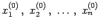
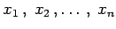
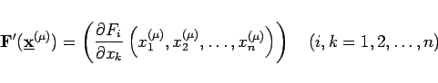
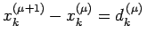
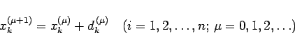
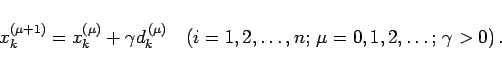

Inhalt Index DeskTop Bronstein

 Numerische Mathematik Numerische Lösung von Gleichungssystemen Nichtlineare Gleichungssysteme
Numerische Mathematik Numerische Lösung von Gleichungssystemen Nichtlineare Gleichungssysteme


Das NEWTON-Verfahren geht von der Nullstellenaufgabe (19.55) aus. Nach Vorgabe von geschätzten Näherungswerten  werden die Funktionen Fi als Funktionen von n unabhängigen Variablen  nach TAYLOR entwickelt. Durch Abbruch dieser Entwicklungen nach den linearen Gliedern erhält man aus (19.55) ein lineares Gleichungssystem, mit dessen Hilfe man iterativ Verbesserungen nach folgender Vorschrift ermitteln kann:
|  | (19.62) |
und wird als JACOBI-Matrix bezeichnet. Das NEWTON-Verfahren ist lokal quadratisch konvergent, d.h., seine schnelle Konvergenz ist wesentlich von der Güte der Startnäherungen abhängig. Setzt man in (19.61) , dann kann das NEWTON-Verfahren in der Korrekturform
|  | (19.63) |
geschrieben werden. Zur Herabsetzung der Startwertempfindlichkeit kann man dann analog zum Relaxationsverfahren einen sogenannten Dämpfungs- oder Schrittweitenparameter  einführen:
einführen:
|  | (19.64) |
Angaben zur Bestimmung von  findet man in Lit. 19.26.
findet man in Lit. 19.26.